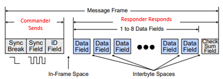
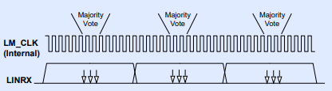
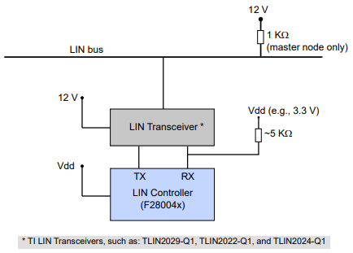

Local Interconnect Network (LIN)#
The LIN standard is based on the SCI (UART) serial data link format. The communication concept is single-commander/multiple-responder with a message identification for multi-cast transmission between any network nodes.
LIN Module
Not all C2000 devices have a LIN module. Refer to the Peripheral Reference Guide for a list of supported modules on your device.
Key Features#
A broadcast serial network
One commander, up to sixteen addressable responders
Serial link layer similar to UART (e.g., start, data, stop bits)
Single wire (plus ground)
12V bus (originally designed for automotive apps)
No bus arbitration or collision detection (Commander initiates all communication, a single responder responds)
Configurable Baud Rate up to 20 Kbits/s
C2000 LIN module
Compliant with the LIN Spec 2.1
Can be used as a UART, if desired
LIN Block Diagram#

LIN Message Frame#

Part of Frame |
Description |
|---|---|
Sync Break |
Indicates the beginning of a message |
Sync Field |
Bit rate synchronizing occurs |
ID Field |
Identifier (6-bit ID, 2-bit parity), Message (optional- 2, 4, or 8 bytes) |
Data Field |
Start (1-bit), Data (8-bit), Stop (1-bit) |
Checksum Field |
Start (1-bit), Checksum (8-bit), Stop (1-bit) |
LIN Data Timing#
To make a determination of the bit value, 16 samples of each bit are taken with majority vote on samples 8, 9, and 10

LIN Bus Connections#
The image below shows an example of a typical LIN bus connection:

LIN Summary#
Functionally compatible with standalone SCI of C28x devices
Identification masks for filtering
Automatic commander header generation
231 programmable transmission rates with 7 fractional bits
Automatic wake up support
Error detection (bit, bus, no response, checksum, synchronization, parity)
Multi-buffered receive/transmit units
Feedback
Please provide any feedback you may have about the content within C2000 Academy to: c2000_academy_feedback@list.ti.com